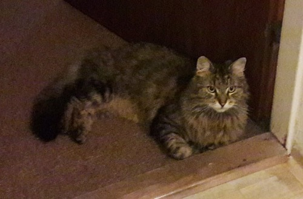

O mně
Ahoj, vítám vás na svých webových stránkách. Jmenuji se Micín, je mi 5 let a bydlím v Brně. Jsem sibiřský kocourek, a proto mám krásný huňatý kožíšek. Bydlím v malém domku se zahrádkou, kde se v létě často vyhřívám na sluníčku.
Ve volném čase chodím rád k sousedům, kteří pro mě mají vždycky něco dobrého, a kteří mě nechávají spát na mém oblíbeném modrém křesle. Občas také ulovím ptáčka nebo myšičku, které pak hrdě mosím ukazovat domů našim.
Před půl rokem mi naši přivedli mového kamaráda. Nebo aspoň chtěli. Ale nový kcourek mi dost leze na nervy, protože za mnou všude chodí. A dokonce už mi několikrát zabral mé modré křeslo! Na druhou stranu je pravda, že mi občas čistí můj kožíšek. A to není zas tak špatné. :-)
